I am a Marketing & CRM Automation Specialist with 5+ years of experience helping businesses streamline customer engagement through Salesforce Marketing Cloud, HubSpot, Braze, and GoHighLevel. My expertise includes customer journey automation, lifecycle marketing, email and SMS campaigns, lead nurturing, CRM workflows, audience segmentation, QA testing, analytics, and performance optimization. I focus on building scalable systems that improve customer experiences and drive measurable business growth.
I help businesses streamline marketing operations through email marketing, CRM automation, customer lifecycle campaigns, workflow optimization, and audience segmentation. My experience includes Salesforce Marketing Cloud Journey Builder, HubSpot Workflows, Braze Canvas, GoHighLevel automation, HTML email development, QA testing, reporting, and campaign analysis.
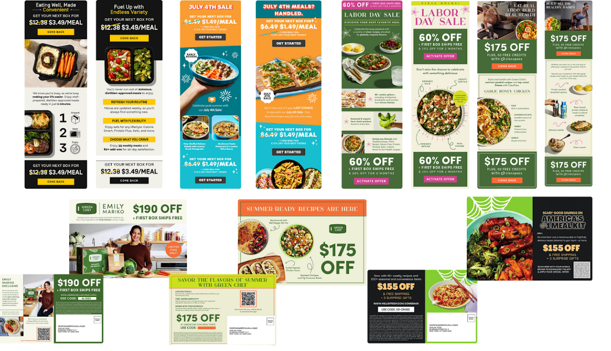
Developed marketing assets and messaging content for email and MMS campaigns focused on customer engagement and brand communication.
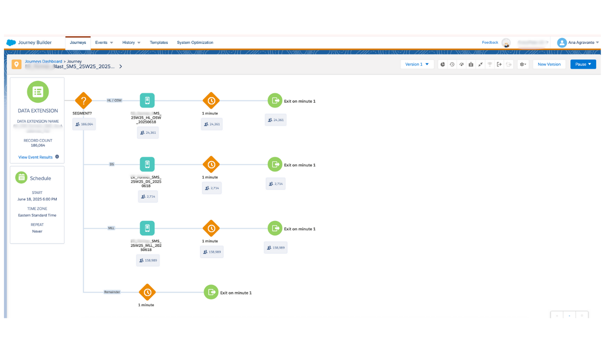
Designed and managed automated customer journeys using Journey Builder with audience segmentation, behavioral triggers, decision splits, and lifecycle marketing strategies.
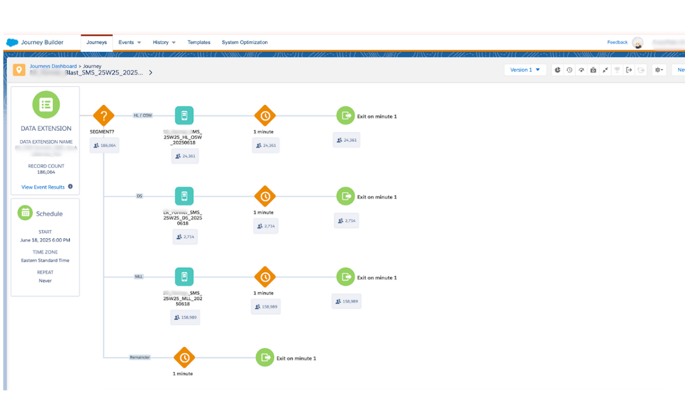
Built SMS customer engagement journeys in Salesforce Marketing Cloud to improve communication, engagement, and customer retention through automated messaging workflows.
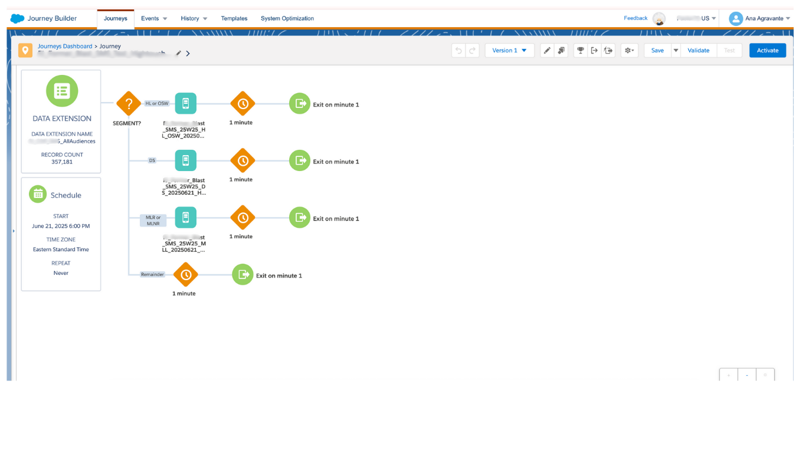
Developed multi-step SMS automation journeys with audience targeting, personalization, and automated customer engagement sequences.
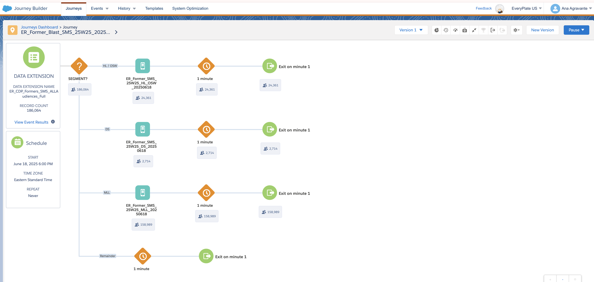
Implemented lifecycle messaging journeys designed to nurture customers across multiple touchpoints using automated SMS workflows.
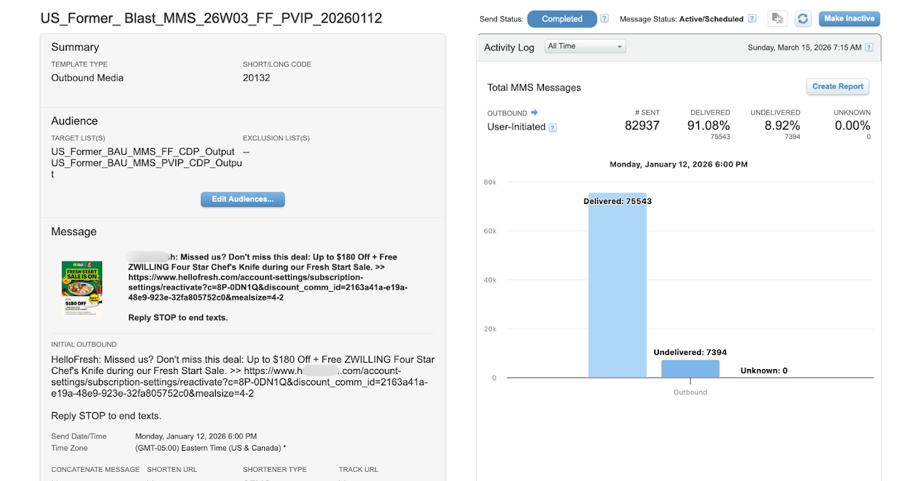
Created MMS marketing automations utilizing visual content, audience segmentation, and customer journey orchestration to increase campaign engagement.
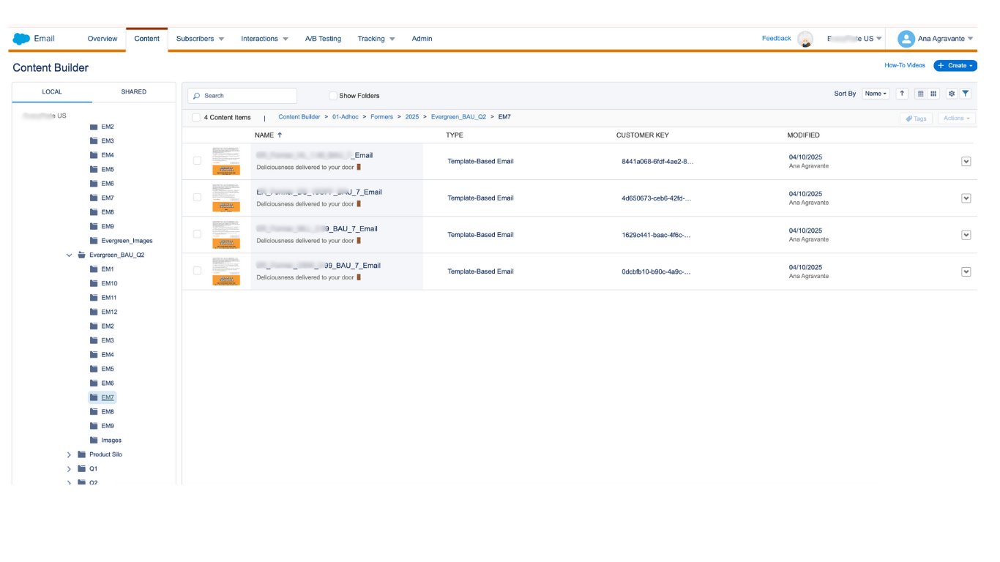
Executed targeted email marketing campaigns using customer segmentation, personalized messaging, and campaign performance monitoring.
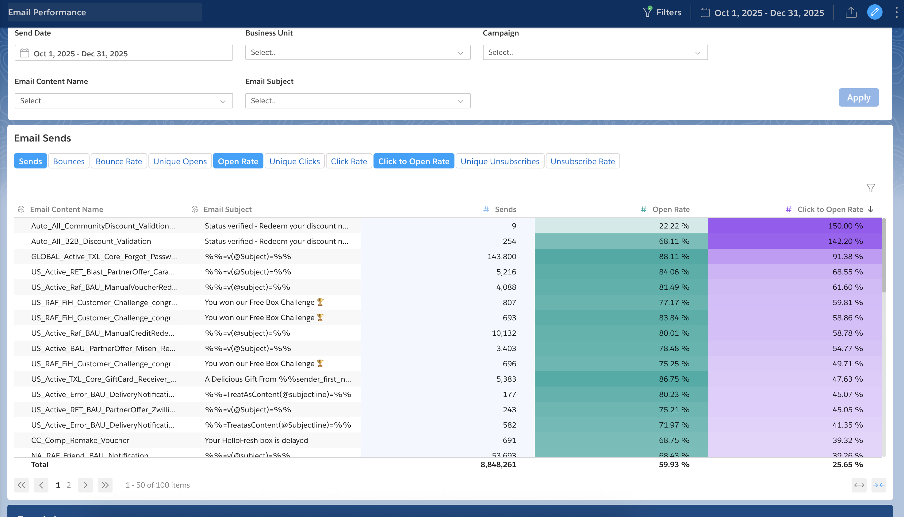
Conducted campaign reporting, engagement analysis, QA testing, and optimization reviews for lifecycle marketing programs.
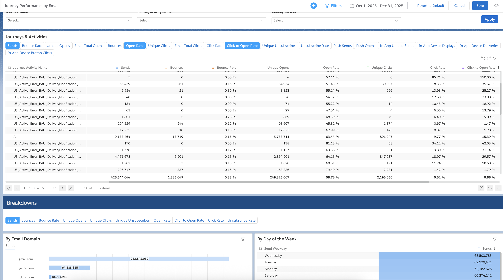
Analyzed customer journey effectiveness through engagement tracking, performance reporting, and optimization recommendations.
.png)
Monitored SMS campaign performance including delivery rates, engagement metrics, and audience behavior insights.
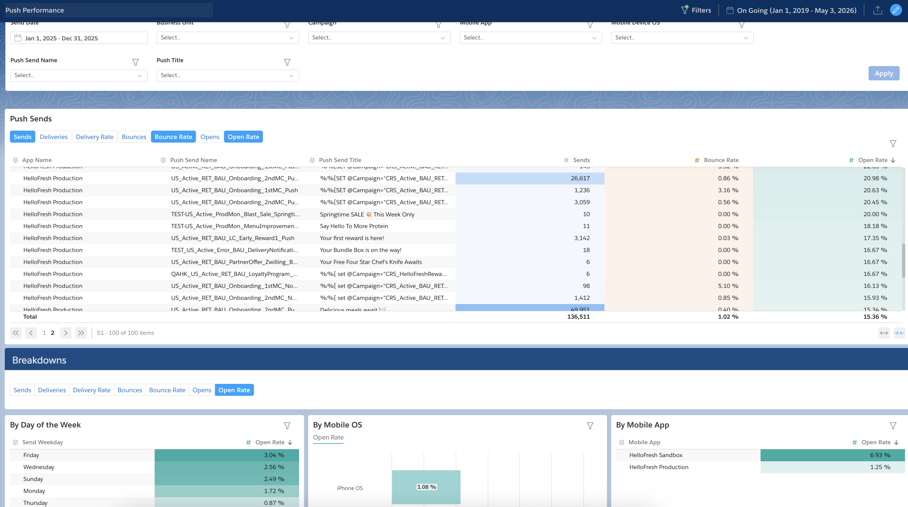
Tracked and evaluated push notification campaign performance to improve messaging strategy and customer engagement.
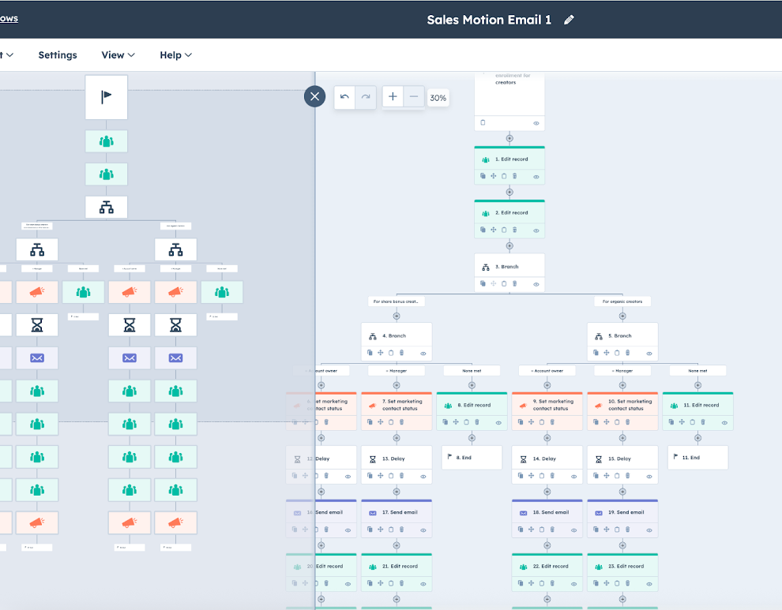
Built lead nurturing, contact management, and CRM automation workflows to streamline marketing and sales processes.
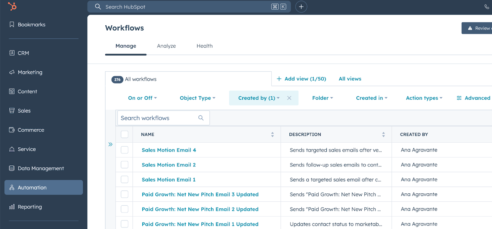
Developed automated lead nurturing workflows that improved follow-up consistency and supported customer lifecycle management.
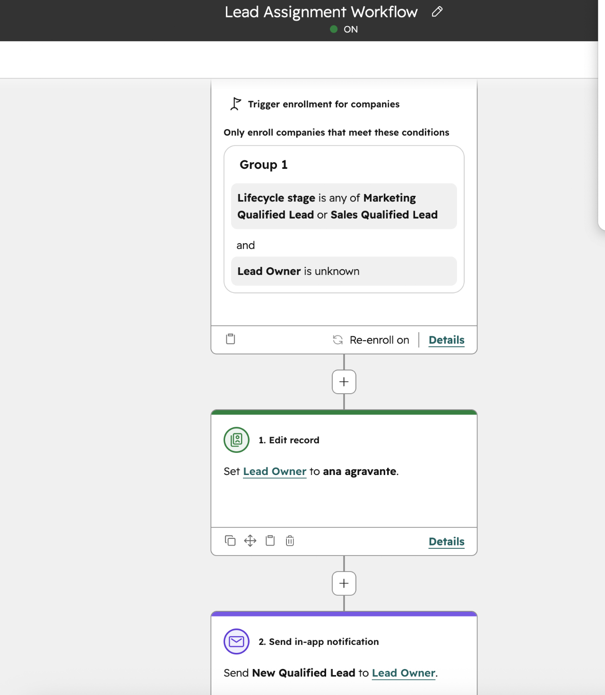
Configured automated lead assignment workflows to route prospects to the appropriate teams and improve operational efficiency.
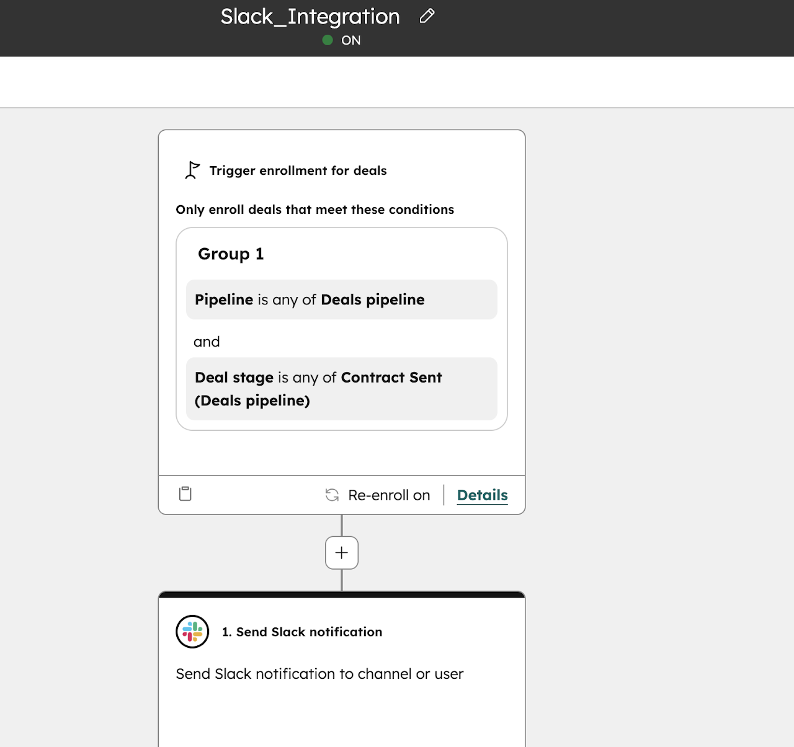
Integrated HubSpot workflows with Slack notifications to improve communication, lead visibility, and team response times.
Sample workflow automations showcasing CRM process optimization, lead management, and team collaboration.
Automated HubSpot-to-Slack notifications designed to improve internal communication, team visibility, and workflow efficiency through real-time alerts and process automation.
Automated lead routing and assignment workflow built in HubSpot to streamline lead distribution, improve response times, and support efficient sales operations.
I'm always open to discussing Marketing Automation, CRM Strategy, Lifecycle Marketing, and remote opportunities.